السلسلة 97
السيارة (صنف B) · 25 سؤال بالصوت. حاول تجاوب بوحدك، من بعد شوف الجواب.
السؤال 1
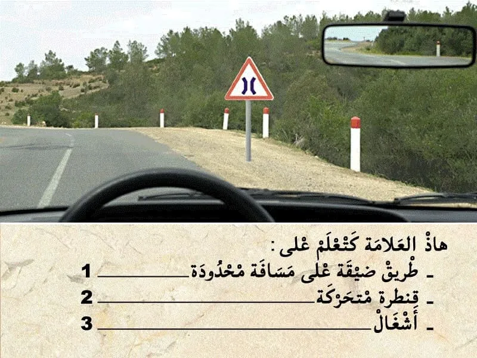
بيّن الجواب
الجواب الصحيح: 1
هذا العلامة . هي علامة ديال الخطر .
- كتعلم على طريق ضيقة على مسافة محدودة غالبا هذا العلامة كتكون قيل قنطرة .
و بالتالي الجواب الصحيح هو رقم 1.
السؤال 2
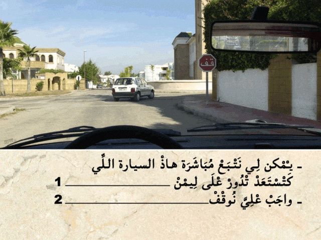
بيّن الجواب
الجواب الصحيح: 2
هذا العلامة ديال المنع .
كتعلم على انه واجب عليا نوقف فهذا ملتقى الطرق. قبل ما نكمل السير.
و بالتالي واجب عليا نوقف حتى انا .
السؤال 3
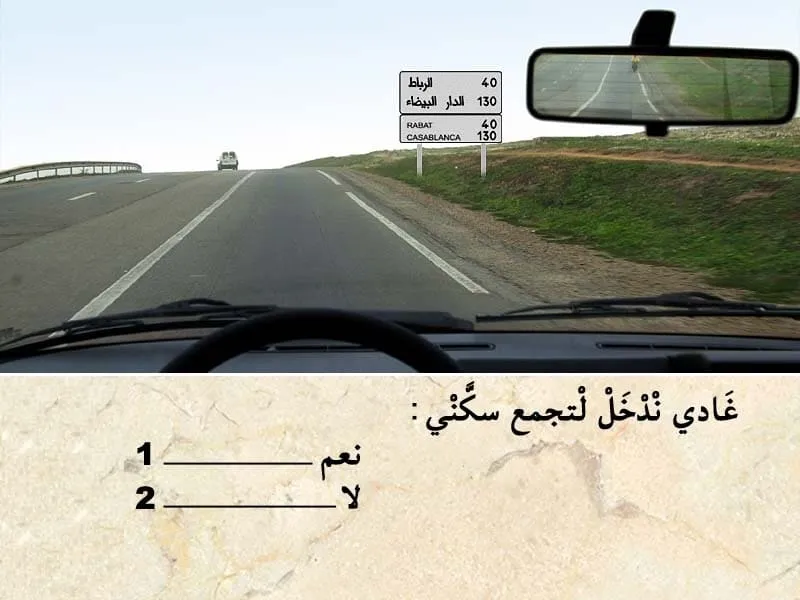
بيّن الجواب
الجواب الصحيح: 2
هذا العلامة ديال الإرشاد.
كتضم كتابة يعني اسم الوجهة "التجمع السكني " . و ارقام لي كتعلم على المسافة لي مزال ليا باش نوصل .
و بالتالي كتأكد الاتجاه لي تبعت.
⛔ باش ندخل لتجمع لأقرب تجمع سكني لي كتعلم عليه العلامة مزال ليا 40 كلم.
السؤال 4
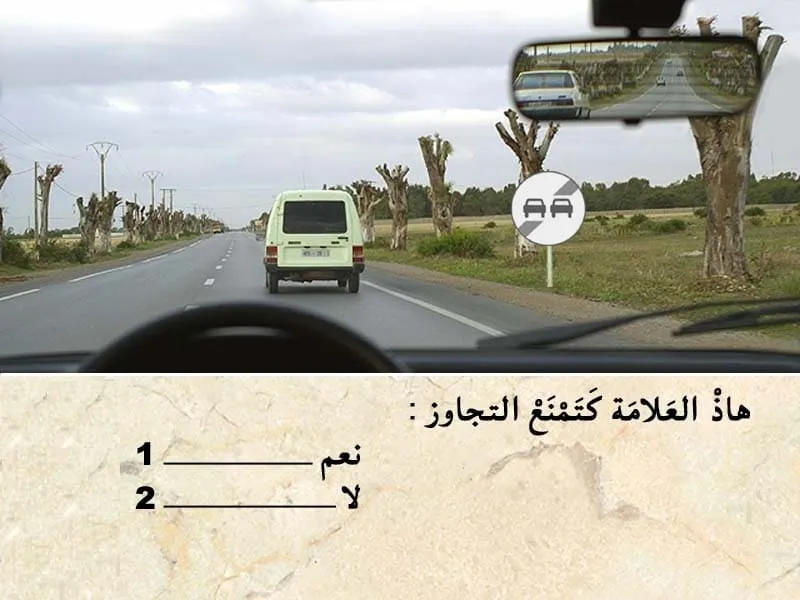
بيّن الجواب
الجواب الصحيح: 2
هذا العلامة ديال نهاية المنع .
كتعلم على نهاية منع تجاوز جميع انواع العربات.
✅ يعني ابتداء من العلامة يكمن لي نتجاوز جميع انواع العربات.
السؤال 5

بيّن الجواب
الجواب الصحيح: 2
من بين الاماكن لي ممنوع التوقف فيها على جنب الطريق :
- رأس العقبة. واجب عليا نخلي مسافة امان بين و بين راس العقبة ديال 60 متر على الأقل.
- في المنعرج. واجب نخلي مسافة 50 متر بيني و بين المنعرج.
- و ملتقى الطرق . من الواجب ترك مسافة 10 متر قبل و بعد المنعرج.
السؤال 6
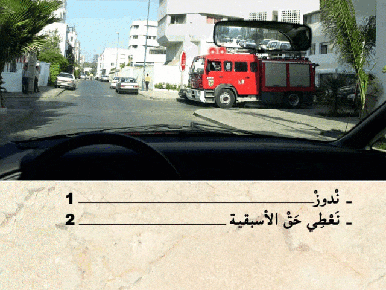
بيّن الجواب
الجواب الصحيح: 2
هذا العربة هي من العربات دات الأسبقية .
و مشعلة الضوء ديال الاستعجال و بالتالي واجب عليا نعطيها حق الأسبقية.
السؤال 7

بيّن الجواب
الجواب الصحيح: 2
في حالة كان الضوء الأصفر رفراف . كيعلم بلي الضوء ثلاثي الألوان غير شغال.
و بالتالي الأسبقية للي جاي من ليمن .
في هذا الحالة واجب عليا نعطي حق الأسبقية للي جاي من جهت ليمن.
السؤال 8
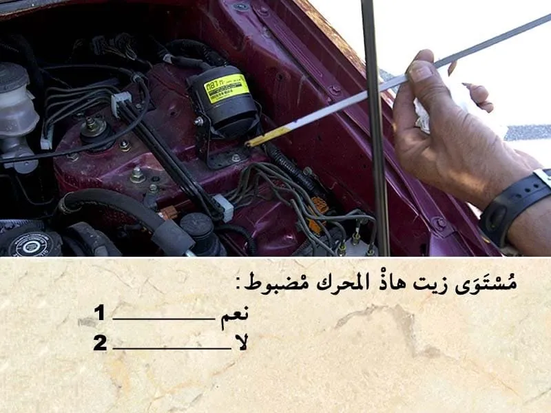
بيّن الجواب
الجواب الصحيح: 1
مستوى زيت هذا المحرك ما بين الحد الاقصى و الحد الأدنى و بالتالي مضبوط.
السؤال 9

بيّن الجواب
الجواب الصحيح: 1
في هذا المنحدر باش نهبط بسرعة منخفضة ننقص من درجات السرعة تدريجيا .
و ما يمكنش لي نحول مبدل السرعة لنقطة عطالة حيت العربة غدي تزيد في السرعة .
و حالة الا استعملت الحصار بصورة متصلة غادي توقف العربة .
السؤال 10
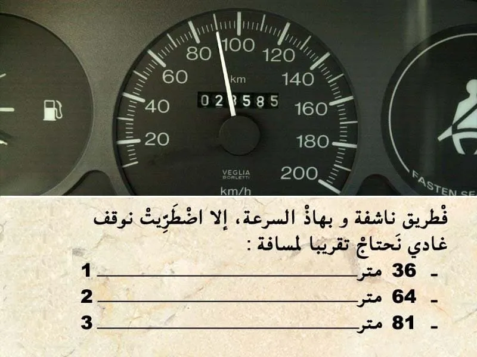
بيّن الجواب
الجواب الصحيح: 3
مسافة التوقف هي العشر ديال السرعة مضروبة في نفسها .
يعني في هذا الحالة ب 90 كلم :
9 * 9 = 81 متر .
يعني الجواب رقم 3.
السؤال 11
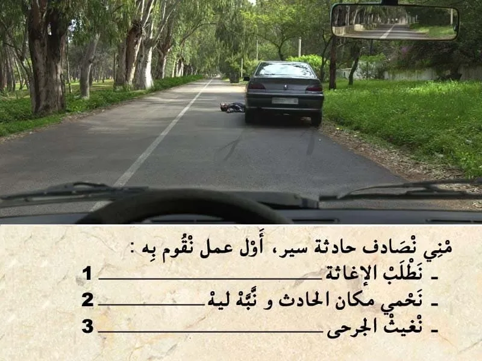
بيّن الجواب
الجواب الصحيح: 2
منين نلقى حادثة و ما تكونش رجال الاسعاف في عين المكان من الواجب عليا نوقف و نقدم الإغاثة بمجرد ما توفر لي الشروط المناسبة .
و اول حاجة نقوم بها هو نحمي مكان الحادث و نبه ليه.
السؤال 12
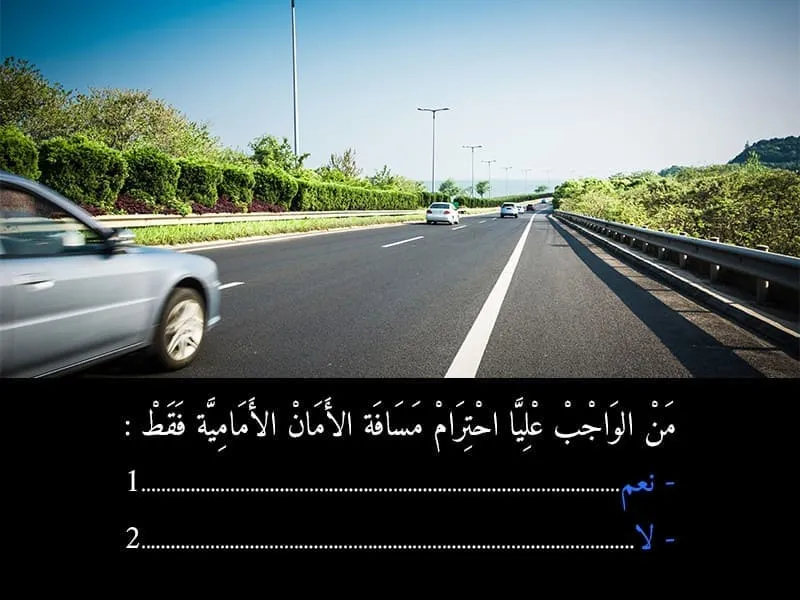
بيّن الجواب
الجواب الصحيح: 2
من الواجب احترام المسافة الامامية و حتى الجانبية ايضا.
السؤال 13
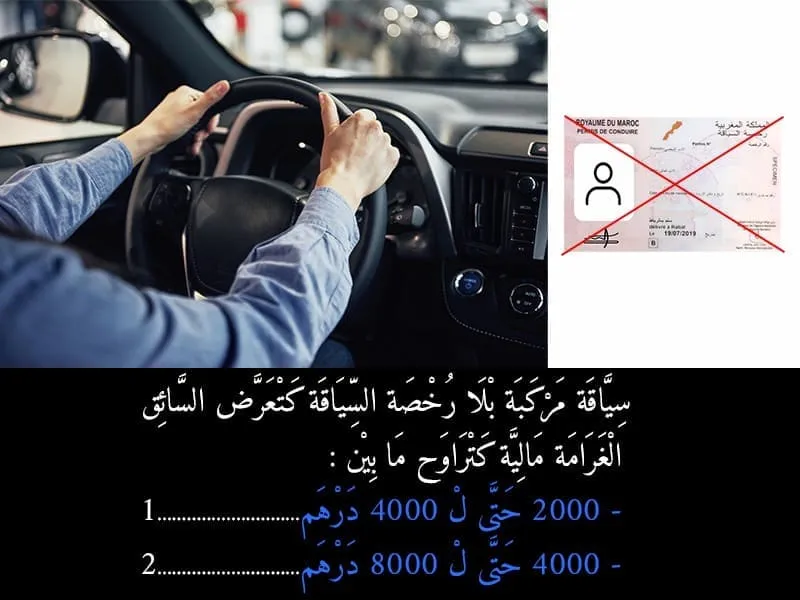
بيّن الجواب
الجواب الصحيح: 1
لا يجوز لأي شخص أن يسوق مركبة ذات محرك أو مجموعة مركبات على الطريق العمومية مالم يكن حاصلا على رخصة للسياقة سارية الصلاحية ومسلمة من قبل الإدارة، تناسب صنف المركبة أو مجموعة المركبات التي يسوقها.
السؤال 14

بيّن الجواب
الجواب الصحيح: 2
يسترجع السائق مجموع الرصيد ( 30 نقطة ) إذا لم يرتكب السائق مخالفة معاقب عليها بخصم النقط خلال مدة ثلاث سنوات.
السؤال 15
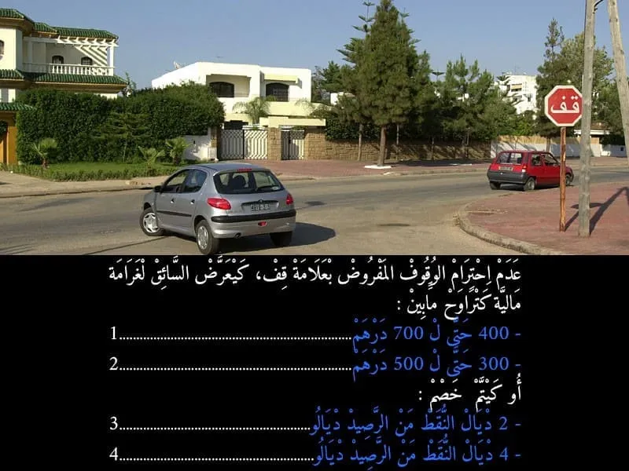
بيّن الجواب
الجواب الصحيح: 1 و 4
عدم احترام الوقوف الاجباري المفروض بعلامة قف كيتعتبر مخالفة من الدرجة الاولى. و كيتم خصم 4 نقاط من رصيد رخصة السياقة . و غرامة مالية 700 درهم .
- في حالة اداء الغرامة في اجل 24 ساعة كيأدي السائق لي ارتكب المخالفة 400 درهم .
- أما في حالة الاداء في اجل 15 يوم فثمن الغرامة هو 500 درهم .
- أما في حالة عدم الادء في اجل 15 كتصبح الغرامة 700 درهم .
السؤال 16

بيّن الجواب
الجواب الصحيح: 2
في هذا الحالة كاين هذا الحافلة قدامي واقفة . و بالتالي كاين احتمال ديال خطر . شي راكب ينزل و يقطع الطريق و بالتالي من الواجب عليا ننقص من السرعة.
السؤال 17

بيّن الجواب
الجواب الصحيح: 1
هذا العلامة ديال الإرشاد.
كتضم كتابة يعني اسم الوجهة "التجمع السكني " . و ارقام لي كتعلم على المسافة لي مزال ليا باش نوصل .
و بالتالي كتأكد الاتجاه لي تبعت.
السؤال 18

بيّن الجواب
الجواب الصحيح: 2
هذا العلامة كتعلم على طريق غادي تضياق على مسافة قصيرة "القنطرة".
في هذا الحالة واجب عليا نعطي حق الاسبقية الا شي مركبة وصلات قبل مني للقنطرة
السؤال 19

بيّن الجواب
الجواب الصحيح: 2
في ملتقى الطرق مع وجود الشرطي او الدركي .
من الواجب نتبع إشارة شرطي المرور .
في الحالة الشرطي داير لجهتي و بالتالي واجب عليا نوقف و ننتظر الإشارة ديالوا.
السؤال 20
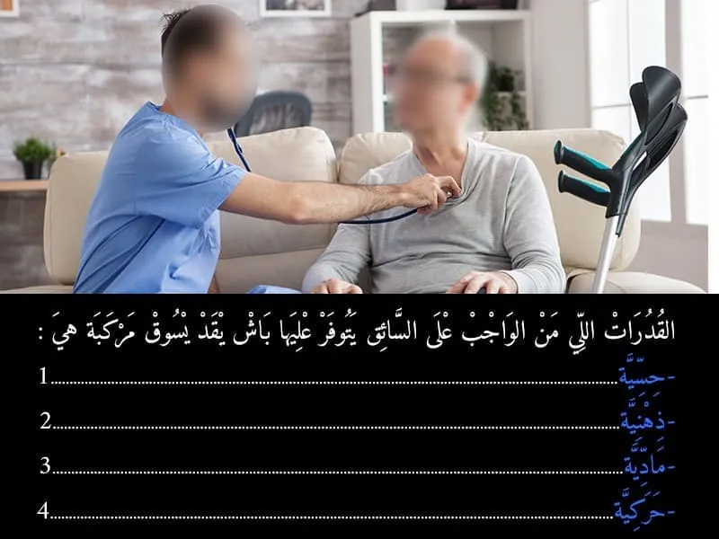
بيّن الجواب
الجواب الصحيح: 1 و 2 و 4
يجب أن يخضع كل مترشح لاختبارات امتحان الحصول على رخصة السياقة لفحص طبي مسبق منجز من طرف طبيب معتمد وذلك بهدف التأكد من توفر المترشح على القدرات البدنية والعقلية الضرورية لسياقة مركبة على الطريق العمومية دون خطر وأنه غير مصاب بأي مرض من الأمراض المانعة للسياقة.
السؤال 21
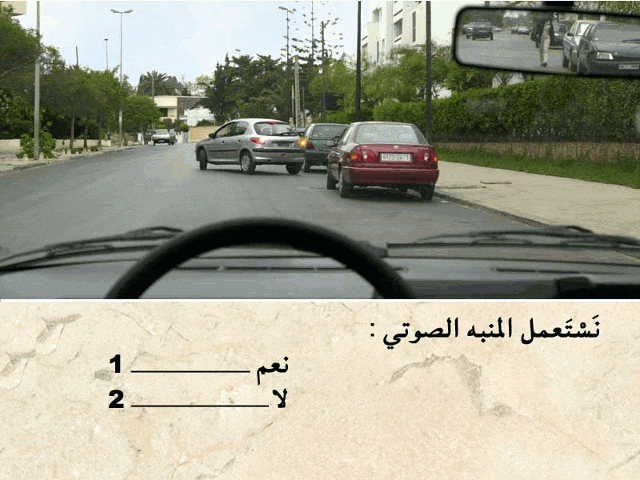
بيّن الجواب
الجواب الصحيح: 2
في هذا الحالة سائق المركبة لي قدامي كيقوم بالتوقف . و بالتالي ما كيشكل حتى خطر عليا . و بالتالي ما نستعملش المنبه الصوتي.
السؤال 22
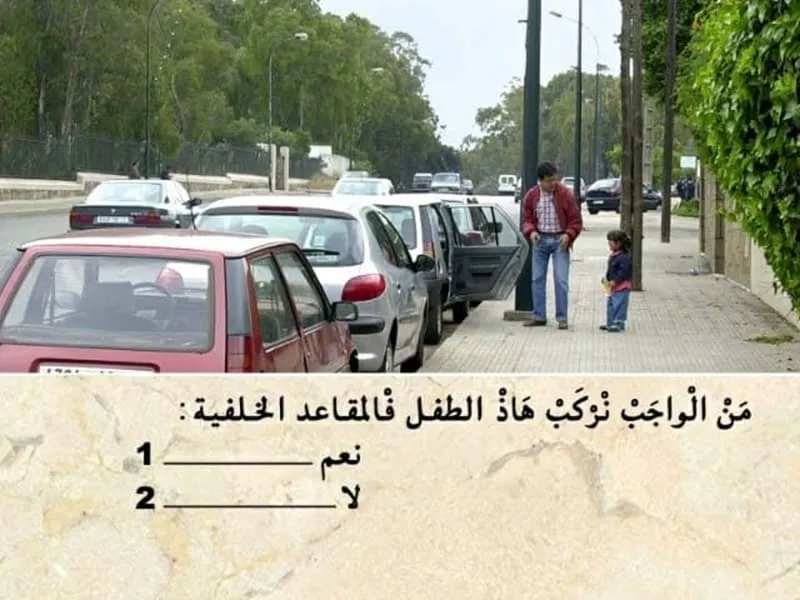
بيّن الجواب
الجواب الصحيح: 1
الأطفال الأقل من 10 سنوات من الواجب يركبوا في المقاعد الخلفية للسيارة .و اركابهم في المقاعد الأمامية كتعتبر مخالفة.
السؤال 23
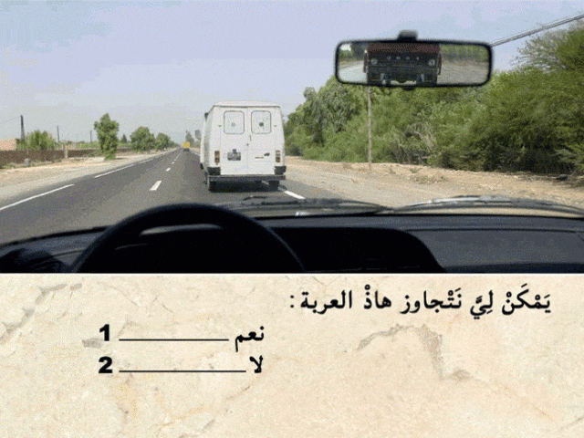
بيّن الجواب
الجواب الصحيح: 2
قبل التجاوز . واجب عليا نراقب، تم نبه، تم ننحاز.
في هذا الحالة كاين شاحنة في الخلف مشغلة مؤشر تغيير الإتجاه. علنات بلي غادي تجاوز .
و بالتالي ما يمكنش لي نتجاوز الآن .
السؤال 24

بيّن الجواب
الجواب الصحيح: 1 و 2 و 3
عندنا التشوير الطرقي و الحواجز و الخط المتاصل اقصى اليمين .
كيدل على أن هذا الطريق هي طريق سيار.
✅ و بالتالي السرعة محدودة في 120 كلم في الساعة.
يمكن لي نمشي بسرعة ما تقلش على 60 كلم في الساعة و ما تفوتش 120 كلم في الساعة.
⛔ 130 كلم في الساعة لا ما يمكنش ليا نمشي بها.
السؤال 25

بيّن الجواب
الجواب الصحيح: 2
فهذا ملتقى الطرق بغياب التشوير الطرقي . الأسبقية للي جاي من جهت ليمن .
فهذا الحالة لي ليمن ديالو خاوي يدوز الاول.
في هذا الحالة نعطي حق الأسبقية للسيارة الكحلا.